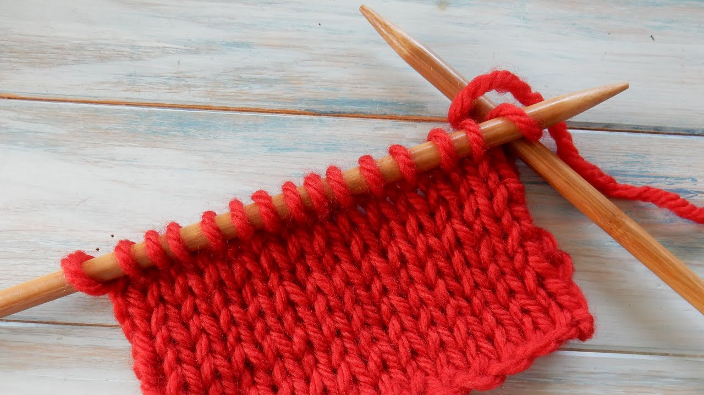

|
Home | Sewing | Embroidery | Knitting | Gallery |
My desire to learn how to knit originally came from my dissatisfaction with the quality of my knitted clothing (mostly sweaters). I was unhappy with how thin the material was and how cheaply constructed the garments were, so over this summer, I started teaching myself how to knit from tutorials on YouTube. I am not good at it by any means, but I do know how to do basic stitches, and I am very excited to learn how to do more intricate designs. There are several patterns on Etsy that I would love to make one day when I have the time, money, and motivation. For now, though, I need to stick to my basic stitches and dream of the day when I have freetime from the insane amount of work that comes with being a college student.
Knitting, unlike my interest in other forms of fiber art, came to me a little later and completely independently; unlike sewing I did not have to learn it for school, and unlike embroidery it was not really attached to an already established interest of mine. I would say that my interest in knitting came out of nowhere, but it makes complete sense to me that I would want to expand my proficiency in the field of fiber art.
| A problem that I often run into when shopping for new clothes
is that I will look at something, think "I could make that," put it down, then never make it. While this
seems like a good problem to have, it has actually caused me to have a very small amount of presentable
clothes that I feel comfortable wearing out in public. I believe that this phenomenon has two causes:
1) I am overly confident in my abilities in sewing and knitting, and 2) I do not like spending money.
While this seems like a silly problem, I have no idea how to fix it, and I believe it will continue being
a problem until the heat death of the universe. With knitting, too, I have mentioned that I can be overly confident in my abilities despite not having done it long enough to even be regularly confident. This may stem from my confidence in my sewing abilities since I have been doing that for several years, but hopefully, in time, I will improve enough so that my confidence in my knitting skills is justified. |
 |
I have not been knitting long enough to have a list of projects, but I am currently working on making a hand towel. It is nowhere near finished, but maybe in the next year I will be able to hold the finished product. I hope to eventually start making unique sweaters and maybe stuffed animals as gifts, but right now I think I need to focus on finishing one project before I start the next one.